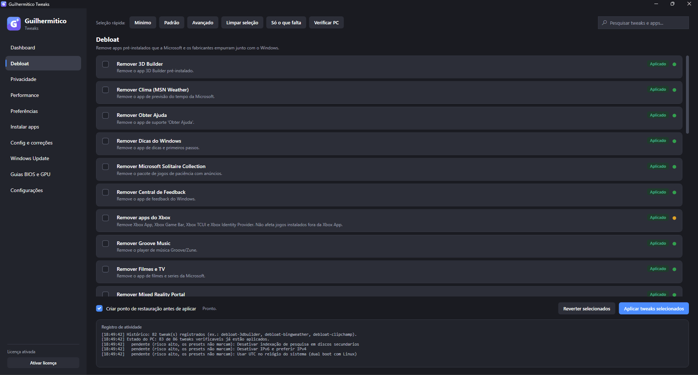
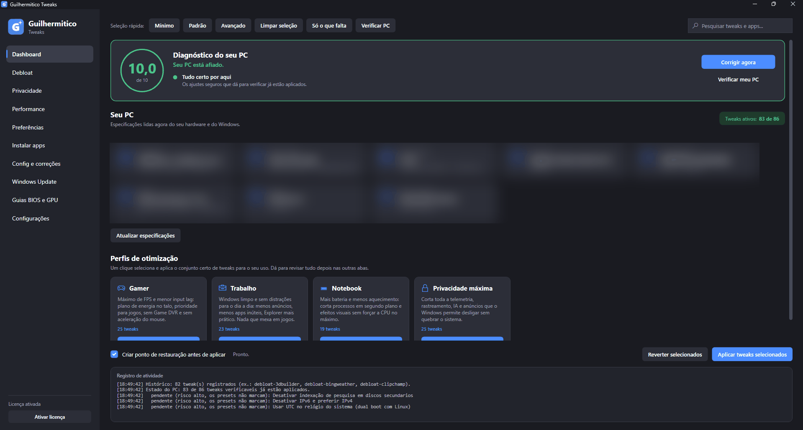
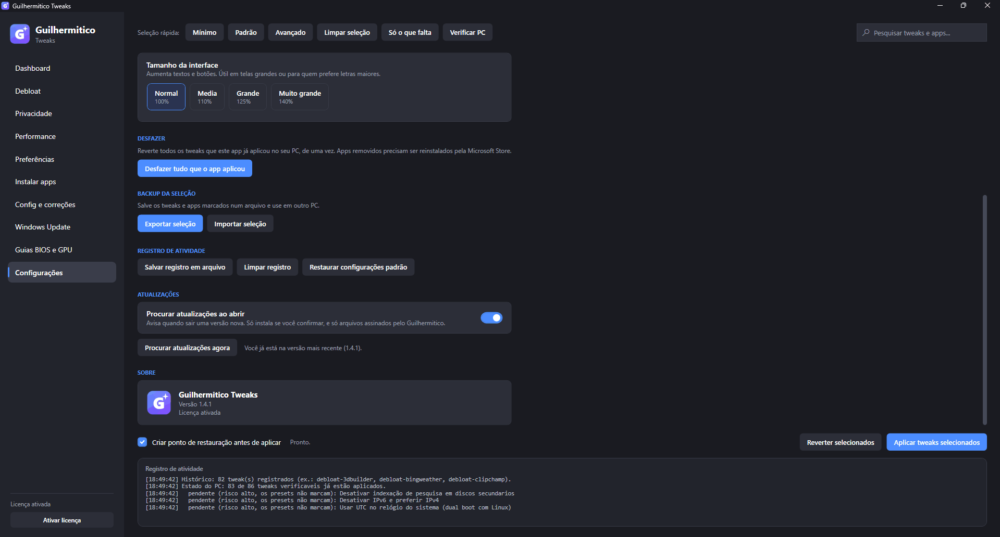
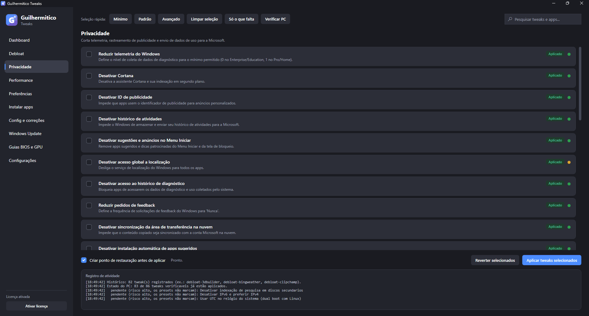

Debloat
Apps pré-instalados, atalhos promocionais, OneDrive e serviços que só ligam para a nuvem. Você escolhe item por item, ou usa um perfil.
Windows 10 e 11 · 64 bits
Tira telemetria, propaganda no Menu Iniciar, apps que você nunca abriu e travas que roubam FPS. Cada mudança é explicada em português, tem botão de desfazer, e o app cria um ponto de restauração antes de encostar no sistema.
88ajustes disponíveis
103itens testados a cada versão
4perfis prontos
7 diascom tudo liberado, e o básico é grátis para sempre
Por dentro
Sem linha de comando, sem arquivo .bat, sem janela preta. Cada ajuste tem nome e explicação em português, e a bolinha do lado direito diz o quanto ele mexe no sistema. O app tem tema claro e escuro e foi ajustado para leitor de tela, teclado e bom contraste.




O que ele faz
Apps pré-instalados, atalhos promocionais, OneDrive e serviços que só ligam para a nuvem. Você escolhe item por item, ou usa um perfil.
Telemetria, ID de publicidade, Cortana, Recall, Copilot, sugestões no Iniciar e anúncios na tela de bloqueio. Cada item com uma frase dizendo o que muda.
Game DVR desligado, prioridade de multimídia, aceleração do mouse fora, plano de energia no talo, apps em segundo plano barrados.
Ajustes de uso do dia a dia do Windows, com a mesma explicação em português e o mesmo desfazer dos outros.
Instala programas (Chrome, Steam, Discord, VLC…) pelo winget, direto dos fabricantes, sem sites de download.
Reparo de arquivos do sistema, reset de rede, reset do Windows Update e limpeza de disco, tudo em um lugar, sem caçar comando no PowerShell.
Três perfis: Recomendado (adia atualizações de recursos por 365 dias e as de qualidade por 4, e evita reiniciar com sessão aberta), Padrão e Desativar. A tela mostra qual está em uso e confere se o perfil realmente pegou.
Guias dentro do app para as configurações de BIOS e da placa de vídeo que o app não aplica sozinho.
O app cria o ponto de restauração e confere se foi mesmo criado; se falhar, pergunta antes de continuar. Ele lembra o que aplicou, e um botão devolve o Windows ao estado anterior.
Comparação honesta
Se você é técnico e não se incomoda com PowerShell, o WinUtil resolve e é grátis. O que você paga aqui é a diferença de cuidado: português, instalador, volta atrás e alguém para chamar.
| Característica | Guilhermitico | Script grátis (WinUtil) | "Otimizador" de anúncio |
|---|---|---|---|
| Em português, do começo ao fim | sim | não | às vezes |
| Instala como programa, com atalho | sim | script | sim |
| Ponto de restauração verificado | sim | parcial | não |
| Desfazer tudo que foi aplicado | sim | item a item | não |
| Explica o que cada ajuste faz | sim | resumido | não |
| Vende "limpeza de registro" que não existe | nunca | nunca | é o negócio dele |
| Preço | R$ 34,90 | grátis | assinatura |
Grátis vs. Completo
Nada de segurança fica atrás de pagamento: o Desfazer é grátis, sempre. O que separa as duas versões é profundidade e conveniência — os perfis prontos, os ajustes de Privacidade, Performance, Preferências e Windows Update, as ferramentas de Config e correções e o histórico completo.
| Recurso | Grátis | Completo |
|---|---|---|
| Debloat — remover apps do Windows | sim, sem limite | sim |
| Instalar programas | sim, até 3 por vez | sim, quantos quiser de uma vez |
| Desfazer tudo que foi aplicado | sim, sempre | sim |
| Guias de BIOS e GPU | sim | sim |
| Perfis de um clique — Gamer, Trabalho, Notebook, Privacidade máxima | não | sim |
| Privacidade — telemetria, ID de publicidade, Cortana… | não | sim |
| Performance — Game DVR, prioridade, plano de energia… | não | sim |
| Preferências e Windows Update (perfis Recomendado, Padrão, Desativar) | não | sim |
| Config e correções — reparo do sistema, reset de rede e do Windows Update, limpeza de disco | não | sim |
| Histórico completo — todas as sessões, com data e exportação | só a sessão atual | sim |
Planos
R$34,90
Pagamento seguro · garantia de 7 dias
R$149,90
Pagamento seguro · garantia de 7 dias
Perguntas frequentes
Todo programa que mexe no sistema tem algum risco — quem disser o contrário está mentindo. Por isso o app cria um ponto de restauração e confere se ele foi mesmo criado antes de aplicar qualquer coisa, marca em vermelho os ajustes mais agressivos, e guarda tudo que fez para desfazer depois. Os ajustes de risco alto ficam de fora dos perfis: só são aplicados se você marcar um por um.
Não. Esse aviso azul ("O Windows protegeu o computador") aparece em todo instalador que ainda não tem certificado de assinatura, que é um selo pago. Clique em Mais informações e depois em Executar assim mesmo. Se preferir, passe o instalador no VirusTotal antes — é o que eu faria no seu lugar.
Para ter certeza de que o arquivo que você baixou é o original, abra o PowerShell na pasta
do download e rode Get-FileHash GuilhermiticoTweaks-Setup.msi. O
resultado tem que ser exatamente este:
932a227d2bfce3c8aa1778b42f30e414e03c933bee7b3e87b8440e4211799d2b
A licença pessoal vale para até 3 computadores seus. O app confere esse limite a cada abertura, quando há internet. Se formatar, dá para ativar de novo com a mesma chave — ela não "queima". Se precisar trocar de computador e a ativação for recusada por já ter 3, é só escrever e eu libero uma vaga. Se você conserta PCs de outras pessoas, a licença certa é a de técnico, sem limite de máquinas.
Depende do seu PC. Em máquina limpa e potente, a diferença é pequena. Em PC cheio de programa em segundo plano, notebook com pouca memória ou Windows de fábrica com bloatware, a diferença aparece — principalmente em travadas e tempo de resposta, mais do que no número médio de FPS. Ninguém sério promete número exato.
São 7 dias com o app inteiro liberado, antes de pagar — e o app nunca para de funcionar: depois disso ficam grátis o Debloat (sem limite), o botão de desfazer e a instalação de programas (até 3 de uma vez). Use, aplique, desfaça, veja se serve. Se depois da compra algo não funcionar como está escrito aqui, escreva para guirodrigues2080@gmail.com.
Não. É o efeito esperado do ajuste que desliga a Xbox Game Bar e a gravação em segundo plano (ele fica na aba Performance). O app Xbox tenta abrir a Game Bar ao iniciar um jogo, não encontra e mostra esse aviso. É só um aviso: os jogos abrem normalmente.
Se o aviso incomodar, abra o app, vá em Desfazer e reverta o ajuste "Desativar Xbox Game Bar e Game DVR". O aviso some e o resto continua como está.
Não para os ajustes: eles rodam offline. A internet é usada para instalar programas pela aba de apps, para buscar atualização do próprio Guilhermitico (e uma lista de chaves bloqueadas, no GitHub) e para o teste e a licença.
Durante o teste de 7 dias o app envia ao servidor só um código anônimo do PC (um hash, nunca o número original do Windows), para o teste não recomeçar ao reinstalar. Na ativação, envia também a chave. Não há coleta de dados pessoais nem rastreamento por terceiros. Os detalhes estão na política de privacidade.
Se não servir, o Debloat, o Desfazer e a instalação de programas continuam grátis.
Comprar licença pessoal — R$ 34,90